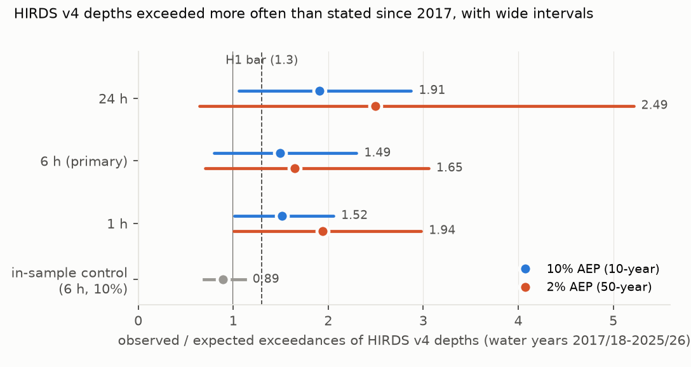
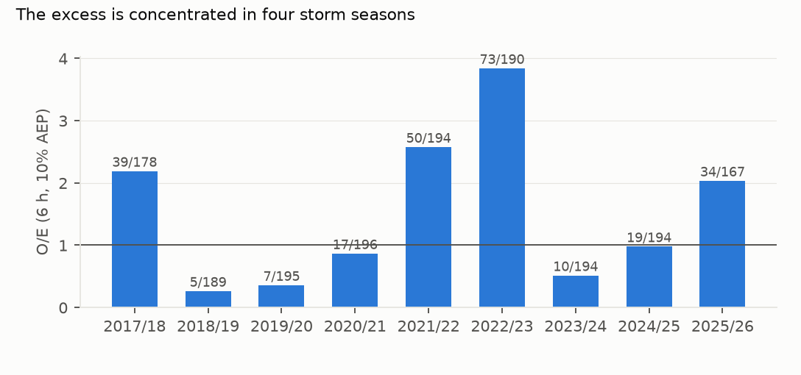

Verdict: H1 Inconclusive.
- H1 (6-hour, 10% AEP depths exceeded at least 1.3 times as often as stated, out of sample): Inconclusive.
- 257 exceedances against 172.1 expected, over 1,721 complete gauge-years: O/E 1.49.
- The preregistered water-year block interval is 0.78 to 2.35. The independent review showed that with nine blocks this interval covers 83% rather than 95%, so a studentized interval is reported beside it: 0.68 to 2.80. The verdict is Inconclusive under both.
- The in-sample control holds. Over the years HIRDS was fitted to (up to 2014/15), O/E is 0.89 (0.69–1.12; studentized 0.69–1.20). The out-of-sample ratio is 1.68 times the in-sample one, which is the cleaner comparison, because both sides carry this harvest's downward biases.
- The stated rate is not quite 1.0. HIRDS's own standard error on a 10-year 6-hour depth is about 10% of it. Exceedance probability is convex in depth, so a gauge whose depth is unbiased but uncertain is exceeded a little more often than 10% of the time: the expected O/E under a correct HIRDS is around 1.1, not 1.0.
- Other durations and levels point the same way, but not independently.
- 1 hour: 1.52 (studentized 0.86–2.34); 24 hours: 1.90 (0.84–3.34).
- At 2% AEP: 1.90, 1.60 and 2.45 for 1, 6 and 24 hours, with very wide intervals.
- These are largely the same storms: about seven in ten of the six-hour exceedances are also 24-hour exceedances at the same gauge and year. No calibrated interval here excludes 1.
- The excess sits in four storm seasons. O/E is above 2 in 2017/18, 2021/22, 2022/23 (3.8, mostly Cyclone Gabrielle in Hawke's Bay) and 2025/26, and at or below 1 in the other five years. Dropping the 2022/23 water year gives 1.20.
- HIRDS's own mid-century depths are close to the observed frequency. Against HIRDS v4's climate-adjusted depths for 2031–2050, O/E is 1.01 (RCP4.5) and 0.97 (RCP8.5). Both intervals are wide, so this is a consistency check, not evidence that mid-century depths are right for today.
In plain terms
Engineers size pipes, culverts and stormwater ponds from New Zealand's national "design rainfall" tables (HIRDS), which say how often big downpours should happen. The current tables were built from rainfall records ending around 2016. We checked what has happened since.
At 200 council rain gauges, a downpour the tables say should come once in ten years at a site has happened about 1.5 times as often as expected since 2017. The same method finds no such excess in the years the tables were built from, which is the main reason to take the comparison seriously at all.
But the evidence is not decisive, and we do not claim it is. Nine years is short, and a few huge storms, above all Cyclone Gabrielle in February 2023, hit many gauges at once. Our calibrated range runs from 0.7 to 2.8 times the stated rate, which includes "no change". The tables are themselves uncertain by about 10%, and that alone would produce a ratio near 1.1. Auckland's own gauges could not be scored on the preregistered rules, because too many of their recent years are still unaudited.
What was asked
- The question. The lead (
auckland-nz-hirds-out-of-sample-exceedance-audit) asked whether HIRDS v4's stated exceedance probabilities hold out of sample. HIRDS v4 (Carey-Smith, Henderson and Singh, NIWA client report 2018022CH, 2018) is used for design-storm assessment and the design of flood-protection works and other waterway structures. It was fitted to records ending in 2015–2017. - The template. Wright, Bosma and López-Cantú (2019) found US "100-year" storms more frequent than design standards assume. No New Zealand counterpart was found.
- The caution. Serinaldi and Kilsby (2015) warn that sampling uncertainty usually swamps apparent non-stationarity in short windows. That is what happened here.
How it was done
- Gauges.
- Every rainfall site on seven open council Hilltop servers (Northland, Hawke's Bay, Wellington, Marlborough, Tasman, Taranaki, West Coast), plus Auckland Council's Environment Auckland portal (D4).
- Native-resolution data with NEMS quality codes, water years 1995/96–2025/26.
- Data faults. Four screens. The first was fixed before any result was read; the others were added after a full
run had been computed, and the superseded tables are kept (D5–D7):
- the reader keeps seconds, so tips sharing a minute are not lost;
- records beyond physical limits are dropped, per record and per 5- or 60-minute window;
- one gauge whose series cannot be incremental even after those screens (a post-screen water-year total of 164,662 mm and 61 negative increments) is excluded entirely.
- Completeness and quality (D2, D3). Records coded missing, unverified or synthetic count as unknown time; rain logged more coarsely than 15 minutes is unresolved for 6 hours; in gauge-years that log at least hourly, silences over an hour are outages. A water year counts if at least 90% of its time is known and its median wet interval is no more than 15 minutes. Sensitivities S1–S4 bracket these choices.
- Annual maxima. Sliding 6-hour totals on a 5-minute grid, within 0.4% of the exact maximum on 30 independently recomputed gauge-years, and reproducing the servers' raw data record for record on 10 refetched gauge-years (G4).
- HIRDS depths. HIRDS v4 historical depths at each gauge's coordinates from ESNZ's HIRDS API point report (D1). AEP = 1/ARI, confirmed by the API.
- Inclusion. At least 8 complete out-of-sample years; co-located or same-named duplicates dropped; where HIRDS's site list shows a gauge's data used into 2017, its out-of-sample window starts in 2018/19 (G1).
- Test. O/E is observed exceedances over 10% of complete gauge-years, with a water-year block bootstrap (2,000 resamples) and a studentized interval beside it (D7). Supported needed O/E ≥ 1.3 with a lower bound above 1.0.
Results
Observed over expected, by duration (results/figures/F1_oe_by_duration.png)


| duration | AEP | O/E | preregistered 95% CI | studentized 95% CI | observed | expected | gauges |
|---|---|---|---|---|---|---|---|
| 1 h | 10% | 1.52 | 1.01–2.07 | 0.86–2.34 | 120 | 79.0 | 92 |
| 6 h | 10% | 1.49 | 0.78–2.35 | 0.68–2.80 | 257 | 172.1 | 200 |
| 24 h | 10% | 1.90 | 1.07–2.87 | 0.84–3.34 | 357 | 187.7 | 218 |
| 1 h | 2% | 1.90 | 0.96–2.98 | 0.86–3.52 | 30 | 15.8 | 92 |
| 6 h | 2% | 1.60 | 0.63–3.04 | 0.54–5.83 | 55 | 34.4 | 200 |
| 24 h | 2% | 2.45 | 0.61–5.20 | 0.25–11.3 | 92 | 37.5 | 218 |
| 6 h, in sample (control) | 10% | 0.89 | 0.69–1.12 | 0.69–1.20 | 172 | 193.5 | 113 |
Fewer gauges qualify at 1 hour, which needs 5-minute resolution.
Year by year (results/figures/F2_year_by_year.png)


- Four storm seasons carry the excess: 2017/18 (2.17), 2021/22 (2.59), 2022/23 (3.83) and 2025/26 (2.02). The other five years run from 0.26 to 0.96.
- Storm clustering. Exceedances within 72 hours of each other across gauges form 69 storms; the largest holds 51 of the 257, from February 2023, mostly in Hawke's Bay. Resampling storms gives 1.50 (0.94–2.23), but it holds the number of storms fixed, so it is not independent confirmation of the year-block interval.
Sensitivities and strata (6 h, 10% AEP)
| analysis | O/E | preregistered CI | studentized CI | gauges |
|---|---|---|---|---|
| primary | 1.49 | 0.78–2.35 | 0.68–2.80 | 200 |
| S1: undetermined gauge-years counted as exceedances (2) | 1.51 | 0.83–2.30 | 0.67–3.01 | 200 |
| S2: zero-closed silences over 14 days count as unknown | 1.53 | 0.74–2.50 | 0.68–3.52 | 159 |
| S3: unverified (2xx) data kept | 1.45 | 0.77–2.18 | 0.67–2.65 | 284 |
| S4: uncoded and poor (0, 4xx) data excluded too | 1.37 | 0.76–2.05 | 0.61–2.46 | 39 |
| drop gauge-years beyond HIRDS's 250-year depth (15) | 1.41 | 0.76–2.13 | 0.69–2.57 | 200 |
| drop gauge-years beyond 1.5 times that depth (4) | 1.47 | 0.77–2.24 | 0.69–2.92 | 200 |
| without January–February 2023 (maxima only) | 1.17 | 0.69–1.71 | 0.60–2.29 | 200 |
| without the whole 2022/23 water year | 1.20 | 0.67–1.81 | 0.54–2.27 | 200 |
| depths minus one HIRDS standard error | 2.39 | 1.41–3.44 | 1.15–4.09 | 200 |
| depths plus one HIRDS standard error | 0.94 | 0.41–1.56 | 0.39–2.24 | 200 |
| against HIRDS RCP4.5 2031–2050 depths | 1.01 | 0.52–1.63 | 0.41–2.22 | 200 |
| against HIRDS RCP8.5 2031–2050 depths | 0.97 | 0.48–1.55 | 0.42–2.28 | 200 |
| HIRDS fitting sites | 1.45 | 0.67–2.38 | 0.62–3.07 | 127 |
| not HIRDS fitting sites | 1.57 | 0.96–2.18 | 0.78–2.43 | 73 |
- By council: Taranaki 1.95 (9 gauges), Hawke's Bay 1.81 (66), Tasman 1.43 (42), Northland 1.37 (34), Marlborough 1.31 (14), West Coast 1.25 (7), Wellington 0.98 (28). Every council interval includes 1.
- Auckland. No Auckland gauge meets the preregistered rule. HIRDS's report says its Auckland data run to early 2017, which falls inside the 2016/17 water year; the G1 rule reads the site list's calendar-year label conservatively and starts Auckland in 2018/19, leaving exactly 8 years, and its 2021/22–2022/23 data are mostly graded unverified. Post hoc, keeping unverified data, 12 Auckland gauges with 8 years give 1.55 (0.42–3.07) and 54 gauges with 6 years give 2.33 (0.41–4.58). Both are exploratory and very uncertain.
What this does and does not show
- The direction is consistent; the evidence is not decisive. Every duration, level, data-quality sensitivity and council except Wellington puts O/E above 1, and the in-sample control does not. But the durations share their storms, every calibrated interval includes 1, and about 1.1 of the ratio is expected from HIRDS's own depth uncertainty.
- The design was unlikely to settle the question. The independent review calculated that under the fitted O/E the preregistered rule would have returned Supported only about 31% of the time, and under a true null it would have returned Refuted about 42% of the time. Inconclusive was the likely outcome before any data were read.
- HIRDS's uncertainty matters as much as the excess. Moving the depths by one standard error moves O/E between 0.94 and 2.40.
- Limits.
- Councils are not a random sample. Seven regions, weighted to Hawke's Bay (65 gauges) and Tasman (42); Auckland contributes none. Canterbury, Otago, Southland, Waikato, Bay of Plenty, Manawatū-Whanganui and Gisborne are not in the harvest.
- Recent data are partly unaudited. The last months of 2025/26 are graded unverified, so that year often fails completeness (168 gauge-years against about 197). Keeping unverified data (S3) gives 1.45.
- Hidden outages. In gauges that log only around rain, an outage closed by a zero looks like a dry spell (D2), which biases exceedances down. The review's checks found the same direction: O/E rises with the share of known time, so incompleteness costs exceedances rather than inventing them.
- Four rounds of data faults. A reader bug (D5), impossible records (D6), a fault no single record betrays and
a non-incremental series (D7) were each found after a full run had been computed; the superseded tables are kept under
results/tables/v0_invalid_minute_dedupe/andv1_before_screen/. That three rounds were needed is itself a caution about open council hydrometric archives. - The fitting-site split is weak. After relabelling (83 gauges matched within 100 m, 44 more by name within 3 km), fitting and non-fitting sites differ by less than their intervals, and every matched HIRDS site ends by 2016, so this does not test overlap with much power.
- One suspected fault remains in the primary. Lake Tutira's 2020/21 6-hour maximum of 223 mm exceeds its 250-year depth with no corroborating storm at neighbouring gauges, and the stuck-sensor rule does not reach it. The beyond-250-year sensitivity removes it and gauge-years like it: O/E falls from 1.49 to 1.41.
- Not shown: attribution to climate change; durations outside 1–24 hours; areal (catchment) rainfall; what any of this means for a particular structure.
Process and deviations
- Preregistration:
plan.md, committed before any rainfall value or HIRDS depth was read. - Deviations (
deviations.md): D1 the HIRDS point API and the G1 rule; D2 completeness and quality rules; D3 the resolution test and in-sample years; D4 Auckland; D5 the reader bug; D6 the physical screen; D7 the post-review screens, duplicates, intervals and fitting-site relabelling, and the confirmation pass's corrections. - Gates: G1 in plan and analysis; G2
results/tables/coverage.json; G3results/plausibility.md; G4results/tables/g4_check.csvandg4_raw_check.csv; G5review/overclaim_check.md; G6results/attribution_ledger.csv; G7 does not apply. - Independent review: Fable, 2026-10-29 (
review/review.md), verdict publish with edits, twelve findings; the confirmation pass returned publish with edits again, with six more, including that the first version of the non-incremental rule was mis-specified and its justification wrong. All are applied. The verdict never changed. - Data sources: Auckland Council (Environment Auckland), whose rainfall data are its own and are not redistributed here; Northland, Hawke's Bay, Greater Wellington, Marlborough, Tasman, Taranaki and West Coast councils; HIRDS v4 (NIWA / Earth Sciences New Zealand).
Reproducing it
code/inventory.py, thencode/fetch.py 3,code/fetch.py 1 early,code/fetch_auckland.py. Raw series stay underdata/(not in git).code/depths.py sites, thencode/depths.py points(needs a HIRDS API key in~/.config/niwa-hirds/key).code/maxima.py, thencode/g4_check.py.code/analyse.py,code/posthoc_auckland.pyandcode/figures.py.